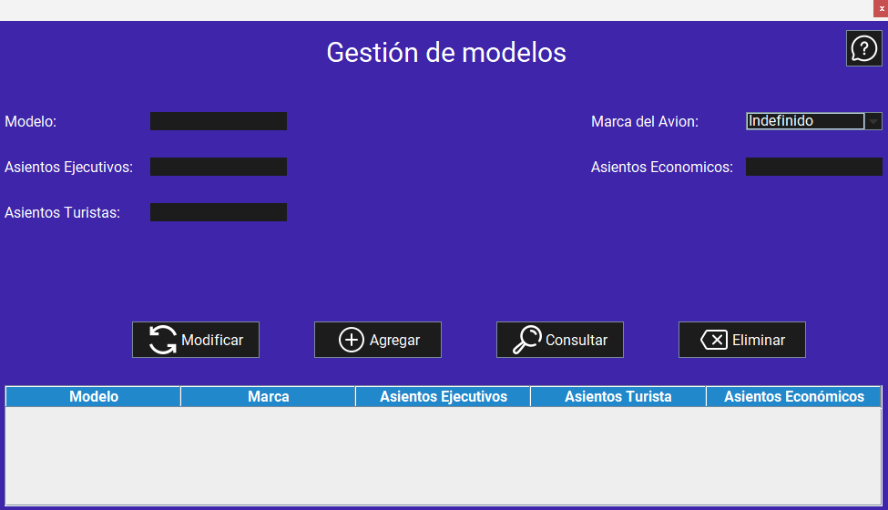
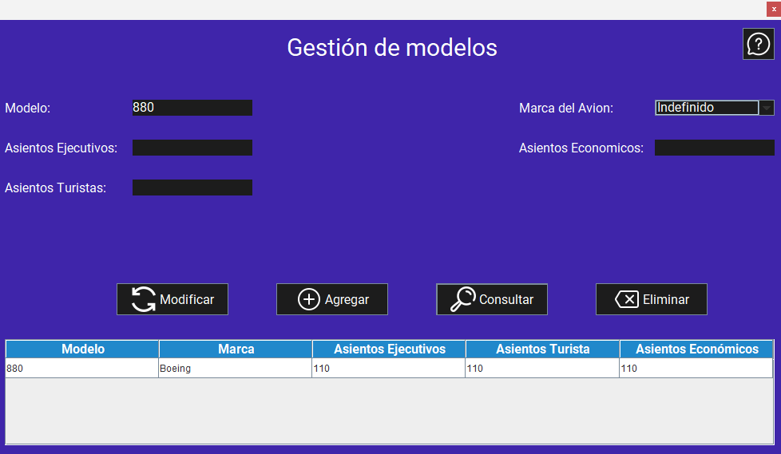

Pantalla principal:
Al iniciar la aplicación, se muestra la pantalla principal de la gestión de modelos. Esta pantalla permite agregar, modificar y eliminar modelos de aviones, así como consultar la lista de modelos registrados en el sistema.
Funcionalidades:
1. Agregar un modelo de avión
Para agregar un modelo de avión, siga estos pasos:
- Inicie la aplicación.
- Ingrese los datos en cada campo de texto (modelo, asientos ejecutivos, asientos turistas, asientos económicos) y seleccione la marca del avión.
- Haga clic en el botón "Agregar".

Advertencias
2. Consultar un modelo de avión
Para consultar un modelo de avión, siga estos pasos:
- Inicie la aplicación.
- Si desea consultar la información de todos los modelos de aviones registrados, simplemente haga clic en el botón "Consultar".
- Si desea consultar la información de un modelo de avión específico, ingrese el nombre del modelo en el campo de texto (modelo).
- Haga clic en el botón "Consultar". 
Advertencias